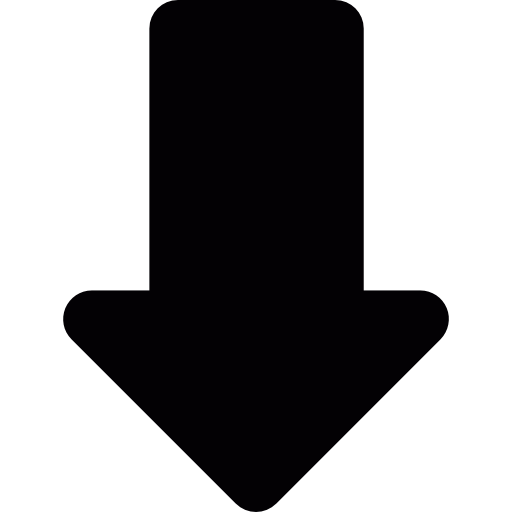

Home
Portfolio
About
Contact
Tab Creator
Step 1: Select a Tab Segment Width
8
16
Step 2: Fill in the Tab Segment as Required
Step 3: Copy Your Tab Finished Tab Segment
Step 4: Write Your Full Tab Here

Guitar icons created by Freepik - Flaticon